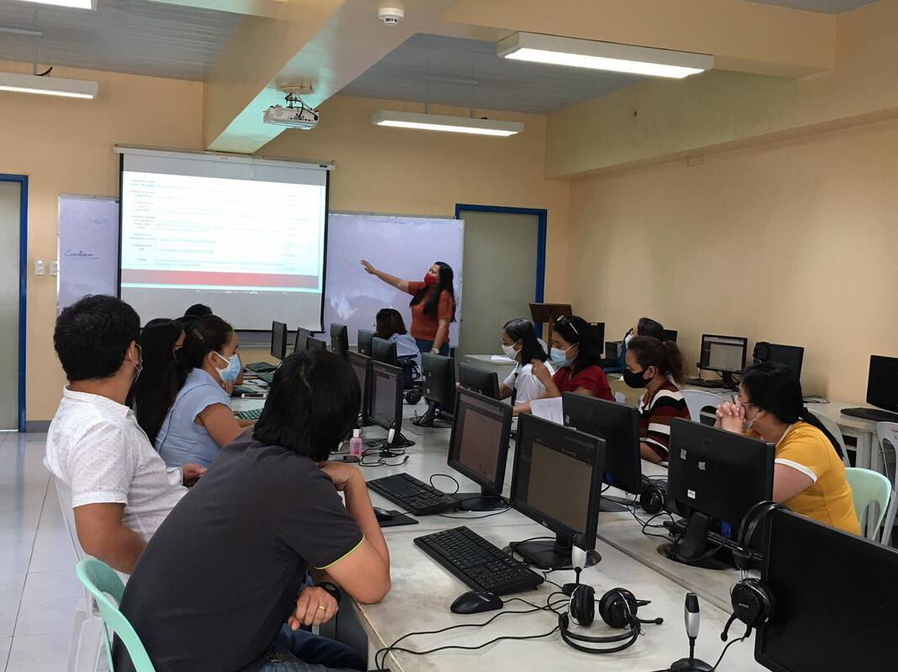

Journal Entries
GE10A
On August 19, 2024, I attended the Guidance Counseling Group Dynamics Activity, organized by CCS, from 10 AM to 12 PM. This session focused on helping students build stronger connections with their peers through group exercises and open discussions. As a participant, I joined activities that encouraged teamwork, communication, and self-reflection. The goal was to foster a sense of belonging and emotional growth within our department.
This activity gave me a deeper understanding of how important communication and empathy are in building relationships. I was surprised by how open and supportive everyone was during the discussions, which made the environment comfortable and encouraging. The best part was realizing that we all face similar challenges, and sharing these experiences brought us closer as a group. It taught me that understanding others helps in creating meaningful connections.
This experience motivated me to be more proactive in reaching out to classmates and building stronger relationships. I also want to apply the teamwork and communication skills I learned to future group projects. If I could join again, I’d participate even more actively and share more about my thoughts to contribute to the discussions.
Because of this activity, I am more aware of the importance of emotional intelligence and teamwork. I feel more connected to my peers and motivated to nurture meaningful friendships. This event reminded me of how much we can achieve when we understand and support one another.
On August 20, 2024, I attended the Balik Talent Lecture titled "Big Data and IoT: Why They Matter in Innovation", organized by CCS, from 8:30 to 11 AM. This lecture was delivered by an alumnus of our department, who shared insights into how Big Data and the Internet of Things (IoT) are shaping the future. As a participant and part of the working committee, I listened to the discussion, took pictures during the lecture, and learned about the practical applications of these technologies in various industries.
My grasp of the Internet of Things (IoT) and big data and their critical role in fostering innovation has expanded as a result of this lecture. The shared real-world examples, which demonstrated how these tools enhance productivity and decision-making, astounded me. Finding out how IoT devices may gather data to address issues we encounter on a daily basis was the most unexpected aspect. It helped me understand how crucial it is to keep up with new developments in technology.
This lecture inspired me to explore Big Data and IoT further, especially how they relate to my studies. I plan to look into certifications or projects that involve these technologies to deepen my knowledge. If I could attend a similar event, I’d prepare questions to ask the speaker and take more notes to fully capture the key points.
Because of this activity, I am more curious about the role of technology in shaping our world. I feel inspired to dive deeper into topics like Big Data and IoT to prepare for future opportunities. This event also reminded me of the importance of lifelong learning and staying open to new ideas.
On August 21, 2024, I participated in Fitness Challenge Day 2, organized by CCS, from 7:30 to 8:30 AM. This activity focused on promoting physical health and encouraging students to stay active. Apart from participating in the exercises, I was part of the documentation committee, where I was tasked with capturing photos and videos of the event to highlight its success. The goal was not only to engage students in fitness but also to document the moments for future reference and inspiration.
I was reminded by this activity how crucial it is to strike a balance between academic life and physical activity. I had a unique perspective because I was able to see and document the participants' excitement as a member of the documentation committee. Observing the happiness and enthusiasm everyone brought to the activity was the most fulfilling aspect, and it helped me to understand how much people get from shared experiences like this. It also helped me get better at managing event records and recording special moments.
This experience encouraged me to be more proactive in both fitness and supporting event initiatives. I want to continue honing my documentation skills to contribute effectively to similar activities. If I could join again, I’d plan ahead to capture even more creative shots and maybe suggest ideas for improving the activity’s overall engagement.
Because of this activity, I am more appreciative of the role fitness plays in keeping us energized and focused. I also feel proud of my contribution as part of the documentation team, knowing I helped preserve memories of the event. This experience reminded me of the value of teamwork and how everyone’s role contributes to the success of an activity.
On August 21, 2024, I joined Trivia Royale, organized by CCS, from 8:30 to 9:30 AM. This quiz-style activity focused on topics related to Web Development, such as binary, HTML, CSS, and JavaScript. In addition to being a participant, I was part of the documentation committee, where I helped record the event by taking photos and ensuring moments were captured for post-event reporting. The goal of the event was to create an engaging way for students to review technical concepts while promoting camaraderie.
I gained a better understanding of how dynamic and imaginative learning can be thanks to this exercise. I had the opportunity to see how participants collaborated and celebrated their successes as a member of the documentation team. I felt more connected to the event since I was able to capture the participants' enthusiasm and energy, which was even more exciting than the quiz itself. It also helped me practice my organizational and teamwork skills in a supportive environment.
I was motivated by this experience to look for further ways to incorporate entertaining, interactive formats with technical instruction. It also inspired me to sharpen my documenting abilities in order to increase the impact of event highlights. If I could take part again, I would concentrate on getting more candid shots.
Because of this activity, I am more confident in my ability to contribute to events both as a participant and as part of a working team. I feel proud of the role I played in preserving the activity’s memories and motivated to take on similar responsibilities in the future. This experience also reminded me that learning and teamwork can be both productive and enjoyable.
On August 21, 2024, I attended Movie Night Day 2, organized by CCS, from 5 to 7 PM. The featured movie was "Inside Out 2", a sequel to the beloved animated film exploring emotions and relationships. As a participant, I watched the movie with my peers and reflected on its themes of personal growth and self-awareness. The activity aimed to provide entertainment while sparking meaningful discussions.
This film got me thinking about how important it is to comprehend emotions and how they affect our relationships. The story's theme about balancing emotions during trying circumstances struck a chord with me, which surprised me. Seeing it with friends enhanced the experience and added significance, so that was the best part. It served as a reminder to me of the significance of recognizing and processing my emotions.
I was motivated by this experience to see more movies that teach important life lessons. Additionally, since this film may improve emotional awareness and comprehension, I would like to share my newfound understanding with others. I would love to hear various perspectives regarding emotional understanding if I could go again.
Because of this activity, I am more aware of the importance of emotional intelligence and personal growth. I feel inspired to work on understanding my feelings better and using them to build stronger relationships. This event also reminded me that stories, even in movies, can teach us valuable lessons about life.